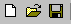

ツールバー
標準ツールバー
ファイル

- 新規作成
- ファイルを開く
- 編集中のファイルを保存
アウトライン
- 選択中のノードと同じ階層にノードを追加
- 選択中のノードの子階層にノードを追加
- 選択中のノードを1階層下に下げる
- 選択中のノードを1階層上に上げる
- 選択中のノードの階層内の順位を上げる
- 選択中のノードの階層内の順位を下げる
パレット
- 選択モード
- 矩形ノード追加モード
- 角丸矩形ノード追加モード
- 楕円ノード追加モード
- 文字ラベルノード追加モード
- 矩形や塗りつぶしを行わない文字ラベルのみのノードを追加します。文字ラベルのみのノードは、ラベルの文字数にフィットするようにサイズ調整されます。
- 矢印なしリンク追加モード
- 一方向矢印リンク追加モード
- 双方向矢印リンク追加モード
リンク属性のプリセット
- リンク線の種類、太さをプリセット
- ホイールボタンでのリンク追加時に線の種類をあらかじめ指定するドロップダウンボタンです。
- リンク矢印のつき方をプリセット
- ホイールボタンでのリンク追加時に矢印のつき方をあらかじめ指定するドロップダウンボタンです
※マウスホイールボタンによるリンク／関連ノードの追加 を参照
ズーム倍率
- ズームモードボタン
- このルーペアイコンを選択し、ネットワークビュー上で左ボタンクリックで、ズームイン、右ボタンクリックでズームアウト、ホイールボタン上回転でズームイン、ホイールボタン下回転でズームアウトします。
- ズーム倍率指定プルダウンメニュー
- プルダウンメニューから倍率を指定します。メニューの一番下の｢全体表示」を選択するとネットワークビューのサイズに合わせて、図全体がフィットするように調整されます。
その他
- つかんでスクロールモード
- 強制再描画
- 簡易グループ化機能とアウトラインを連動
※簡易グループ化機能とアウトライン連携 を参照
書式設定ツールバー
ノードラベルのアライメント
- 左寄せ
- 中央揃え
- 右寄せ
- 天配置
- 中央
- 地配置
ノードのフォント・行モード
- 選択中のノードをシングル行表示にする
- ネットワークビューで選択されているノードをシングル行表示にします。マルチ行からシングル行にするときは、ノードの大きさもラベルの文字数に合わせて再設定されます。複数ノードが選択されている場合は選択されたすべてのノードに対して実行されます。
- 選択中のノードをマルチ行表示にする
- ネットワークビューで選択されているノードをマルチ行表示にします。シングル行からマルチ行にするときは、ラベルの文字数が長い場合(50文字以上)は、ノードのサイズが行数にあわせて再設定されます。複数ノードが選択されている場合は選択されたすべてのノードに対して実行されます。
- 選択中のノードのフォントを大きくする
- ネットワークビューで選択されているノードを1段階大きくします。ノードの大きさもフォントサイズに合わせて拡大します。複数ノードが選択されている場合は選択されたすべてのノードに対して実行されます。
- 選択中のノードのフォントを小さくする
- ネットワークビューで選択されているノードを1段階小さくします。ノードの大きさもフォントサイズに合わせて縮小します。複数ノードが選択されている場合は選択されたすべてのノードに対して実行されます。
※入力文字数・フォントサイズ等によるノードのサイズ・スタイルの自動調整 を参照
ノード書式
- ノード色設定のカラーダイアログ
- ノード・リンク色設定のカラーダイアログ
- フォント色設定のカラーダイアログ
- 書式を適用
任意のノードの書式(塗りつぶし色など)を保存して、このボタンでカーソルを書式適用モードに変えます。クリックしたノードの書式が保存書式に変更されます。